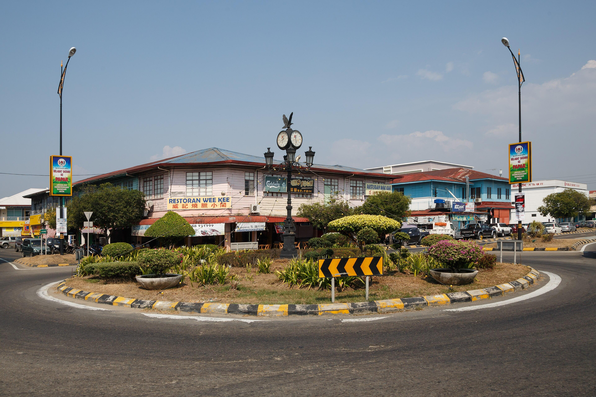
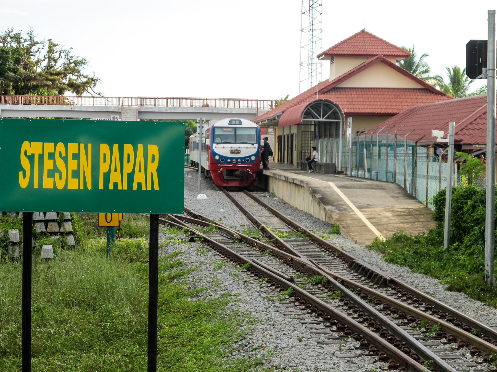
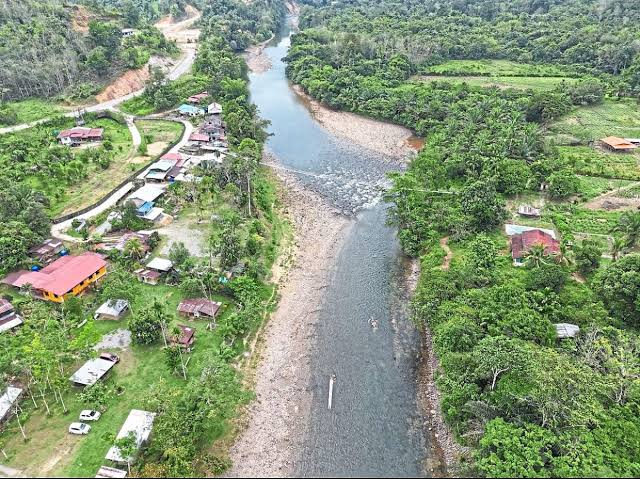
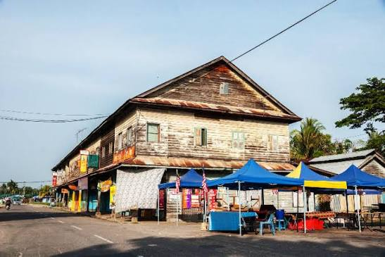

A little place that will always feel like home.

My hometown is Papar, a peaceful and quiet town located on the west coast of Sabah. It is known for its traditional village atmosphere and simple lifestyle.
Papar is also the place where I grew up and spent most of my childhood. It holds many memories that make this town special to me.
Papar is located approximately 38 kilometres from Kota Kinabalu. The town is surrounded by villages, greenery and rivers, creating a calm and relaxing environment.
Papar is also known for its agricultural activities, especially rice farming. Life here is simple and peaceful, making it a comfortable place to grow up.
Some places worth exploring in my hometown.
A local town with shops, restaurants and traditional markets where people gather for their daily activities.

A railway station with historical significance and an important part of the railway journey in Sabah.

A beautiful natural area surrounded by peaceful scenery and greenery.

An area near Papar known for its historical attractions and coastal scenery.
Papar will always have a special place in my heart because it is where I grew up and created many childhood memories.
My family and loved ones are also here. I love the peaceful environment and familiar surroundings that make me feel comfortable and at home.
No matter where I go or how far life takes me, Papar will always be my home. ♡